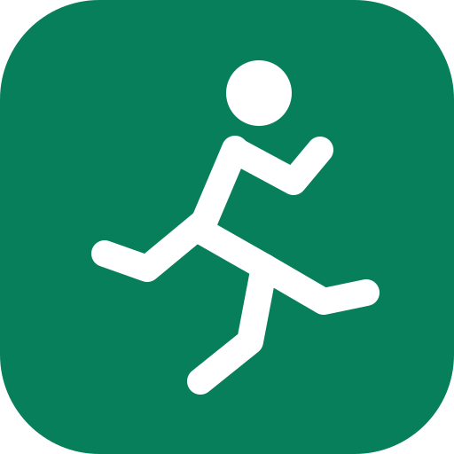

What is brisk walking?
Walk fast enough that your breathing becomes deeper and you feel warmer, while still being able to speak in short sentences. It is not a race; choose a pace that suits your fitness.

Move a little, every day.
Your latest saved activity.
Timer keeps running while this page is open.
For walks tracked elsewhere or when GPS is unavailable.
Review, edit, export or delete your activity.
A simple guide to safe, consistent walking.
Walk fast enough that your breathing becomes deeper and you feel warmer, while still being able to speak in short sentences. It is not a race; choose a pace that suits your fitness.
Begin with 3–5 minutes of easy walking. Finish with 3–5 minutes of slower walking. Gentle ankle circles and calf stretches are optional.
Wear comfortable footwear, choose well-lit routes, stay hydrated, and be aware of traffic and weather. Stop if you feel unwell.
This app is not a medical device and does not provide medical advice. If you have a medical condition or develop chest pain, faintness, or unusual breathlessness, stop and seek appropriate medical help.
Goals, estimates, reminders and local data.
Used only to estimate calories and steps. Stored on this device only.
In-page reminders work only while this page is open. Add the calendar file for a reminder handled by your calendar app.
Import merges walks by ID and replaces settings. Export a backup before importing.
Your data stays in this browser. Nothing is sent to a server. Clearing browser data or switching devices can remove your history; export a backup.
BriskWalk is a free walking tracker. It is not a medical device. Estimates may be inaccurate.